Water Dam Breach
To model water dam breach scenarios in FLO-2D, several approaches are available depending on the level of detail required, the available data, and the purpose of the analysis. These approaches range from simplified empirical methods for rapid screening studies to more detailed hydraulic simulations that represent breach development and downstream flood routing.
Three methods can be used to simulate water dam failures in FLO-2D. Each method represents a different level of modeling complexity and physical representation of the failure process. The following sections describe these methods in detail, including their assumptions, typical applications, and recommended tutorial packages for implementation.
Method 1: Breach Hydrograph Tool
The Breach Hydrograph Tool is a simplified and efficient method for estimating the outflow hydrograph associated with a water dam failure. This approach is commonly used for preliminary assessments, regulatory studies, emergency planning, and screening-level analyses where detailed breach mechanics are not required or where limited data are available.
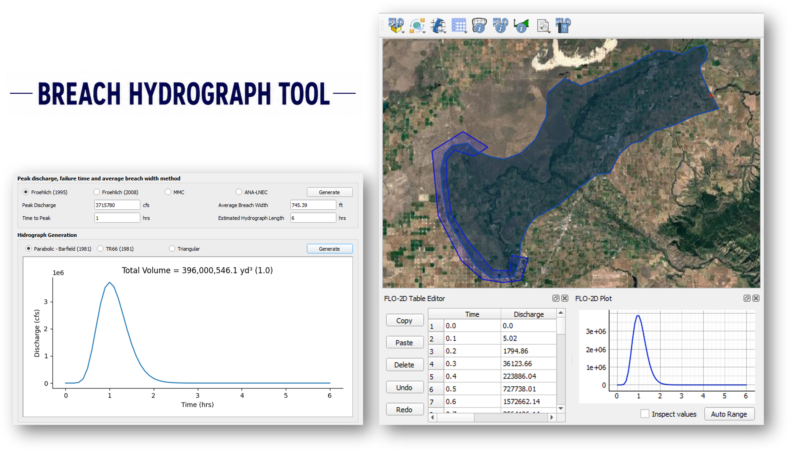
The tool estimates the key breach parameters required to define the dam failure hydrograph, including the peak discharge, time to peak discharge, average breach width, and the total duration of the hydrograph. These parameters are calculated using widely accepted empirical relationships derived from historical dam failure data, such as the Froehlich equations, the ANA-LNEC methodology, and the MMC approach. These methods provide practical and defensible estimates of breach characteristics when detailed information about the failure mechanism is not available.
After estimating the breach characteristics, the tool generates the breach hydrograph using simplified analytical shapes that represent the temporal evolution of the discharge during the failure process. Common hydrograph shapes include triangular, parabolic, and TR66 formulations. The resulting hydrograph can then be directly assigned to an inflow boundary condition in the FLO-2D model, allowing the released water to be routed through the downstream system to evaluate flood depths, velocities, and inundation extent.
The case study for this method is the Teton Dam Failure, which used the complete workflow for estimating breach parameters, generating the outflow hydrograph, and routing the resulting floodwave using the Breach Hydrograph Tool.
Teton Dam Failure
The failure of the Teton Dam in Idaho, United States, on June 5, 1976, remains one of the most thoroughly documented embankment dam failures in hydraulic engineering history. The event occurred during the initial filling of the reservoir, when the water level approached the design maximum pool elevation. Due to the extensive forensic investigations conducted after the failure, the case provides a reliable and well-documented benchmark for evaluating dam breach modeling methodologies and flood routing performance.
{kind=link}
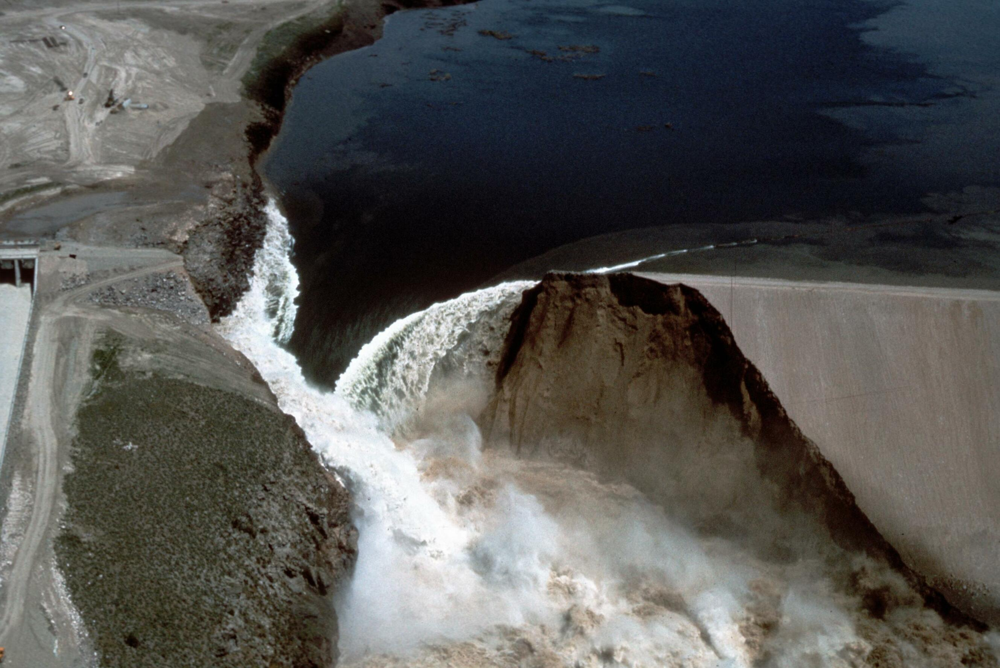
Note
Historical aerial photograph of the Teton Dam failure near Newdale, Idaho, captured on June 5, 1976. The image shows the breached dam and downstream flood impacts along the Teton River corridor. Source: Roberts, WaterArchives.org (Image ID-L-0010). No known U.S. copyright restrictions.
The dam failure was initiated by internal erosion through the embankment core, commonly referred to as piping. Seepage developed along fractures in the core and foundation materials, progressively enlarging internal flow paths until structural integrity was compromised. Once a sinkhole formed on the downstream face, rapid erosion led to full breach formation within a few hours. The resulting flood wave propagated downstream along the Teton River valley, producing widespread inundation and significant economic damage.
Because the failure mechanism, reservoir conditions, breach development, and downstream impacts were extensively documented, the Teton Dam event has become a standard reference case for validating hydraulic models and training engineers in dam breach simulation.
Project Characteristics
The Teton Dam failure involved the sudden release of a large reservoir volume and produced one of the highest recorded discharges associated with an embankment dam failure. The hydraulic conditions and downstream flood response provide an ideal test case for evaluating dam breach modeling tools and flood hazard assessment methodologies.
The dam had a total height of approximately 305 feet and stored a reservoir with a capacity of approximately 435 million cubic yards. At the time of failure, the reservoir contained an estimated released volume of approximately 396 million cubic yards. The breach developed rapidly, generating a peak discharge of approximately 2.3 million cubic feet per second and producing a flood wave that inundated an area of roughly 240 square kilometers downstream of the dam.
Modeling Objectives
The primary objective of this case study was to simulate the dam failure using FLO-2D and the Breach Hydrograph Tool to evaluate the downstream flood response resulting from the breach. The simulation focused on reproducing the magnitude and timing of the released flow and estimating the resulting inundation extent and hydraulic conditions across the downstream valley.
Specific modeling objectives included:
Estimating the breach discharge hydrograph
Simulating flood propagation downstream of the dam
Evaluating inundation depth and flood extent
Verifying model stability and volume conservation
This type of analysis is commonly performed in dam safety studies, emergency action planning, consequence assessments, and regulatory evaluations.
Model Setup and Data
The simulation domain was defined using terrain and land cover data representative of the downstream watershed. Elevation data were processed to generate a computational grid suitable for hydraulic routing, and surface roughness values were assigned based on land cover classification. The modeling domain was configured to capture the expected flood propagation along the river valley and adjacent floodplain areas.
The computational grid resolution was selected to balance numerical stability, computational efficiency, and spatial accuracy. Boundary conditions were defined to represent the inflow generated by the dam breach and the downstream flow routing conditions. The resulting model configuration allowed the simulation to reproduce the hydraulic response of the flood wave as it moved through the downstream system.
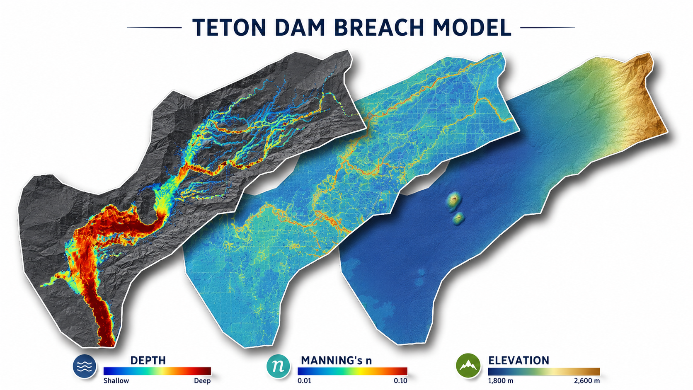
The modeling workflow included verification of simulation stability and review of diagnostic outputs such as volume conservation, velocity distribution, and time step behavior. These checks are essential for ensuring that the simulation results are physically realistic and numerically stable.
Simulation Results
The FLO-2D simulation reproduced the key hydraulic characteristics of the Teton Dam failure, including rapid reservoir drawdown, high peak discharge, and extensive downstream inundation. The model generated time-dependent flow depth and velocity fields that allowed detailed evaluation of flood behavior throughout the computational domain.
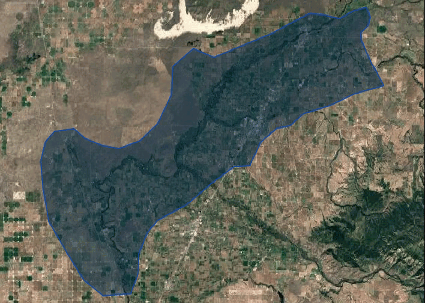
The results demonstrated the ability of the model to simulate large-scale dam breach events and to capture the dynamic interaction between the released flow and the downstream terrain. Areas of high velocity were identified near the breach and along confined sections of the river valley, while broader floodplain areas exhibited lower velocities and deeper inundation depths. These patterns are consistent with the expected hydraulic behavior of a large dam breach flood wave.
The simulation also confirmed that the total released volume matched the expected reservoir discharge, indicating that the model maintained appropriate mass conservation throughout the event. This verification step is critical for ensuring the reliability of dam breach simulations used in engineering and regulatory applications.
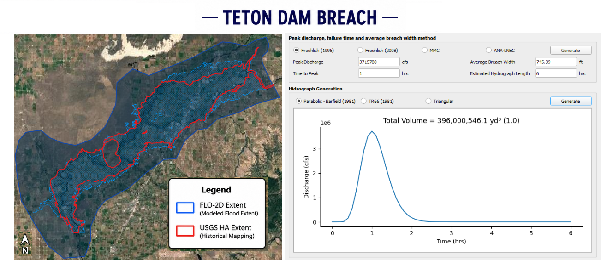
Training and Professional Development
This case study is part of the FLO-2D Dam Breach training package, which provides practical guidance on how to develop, run, and evaluate dam failure simulations using real-world scenarios. The training focuses on building technical confidence in model setup, parameter selection, and result interpretation.
Participants learn how to:
Define a dam breach scenario
Generate and apply a breach hydrograph
Configure the computational domain
Run the hydraulic simulation
Analyze flood depth, velocity, and inundation results
Produce maps and technical outputs for decision-making
The training materials are designed for engineers, consultants, regulators, and emergency planners responsible for dam safety and flood risk management.
Method 2: Prescribed Breach
In this method, the user directly defines the breach geometry and the rate at which the breach develops over time. The model then computes the resulting outflow hydrograph dynamically based on the changing breach dimensions and the hydraulic conditions in the reservoir.
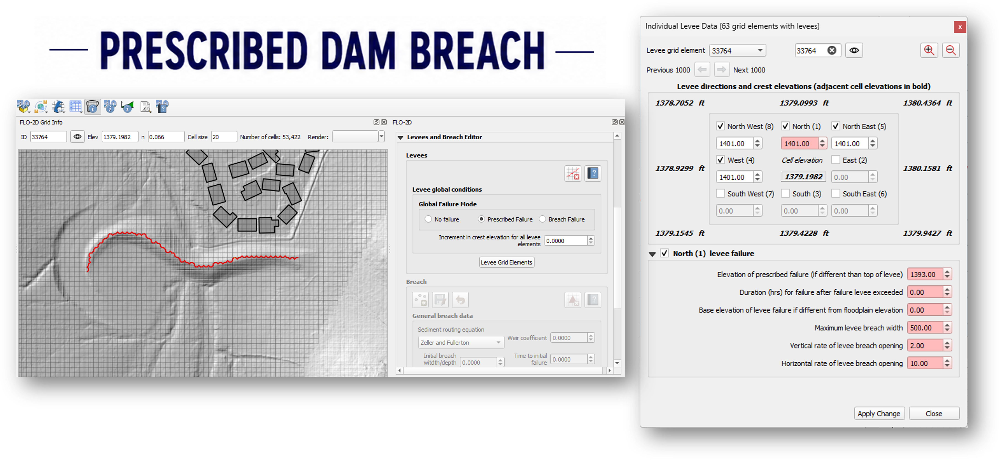
This approach is commonly used when site-specific information about the breach characteristics is available or when regulatory guidance requires the explicit definition of breach parameters. The prescribed breach method allows the user to control aspects of the failure process, including the final breach width, breach development rates, breach invert elevation, and the time required for the breach to fully develop.
The prescribed breach method is particularly appropriate for engineering studies where the breach characteristics can be reasonably estimated based on design information, dam geometry, or regulatory guidance. It is also commonly used in consequence assessments, dam safety evaluations, and emergency action planning studies where a defined failure scenario must be simulated in a consistent and repeatable manner.
The case study for this method is the Conceptual Urban Dam Failure Scenario, which defined the breach geometry, specified the breach development time, and simulated the resulting reservoir release using the Prescribed Breach method.
Conceptual Urban Dam Failure
Dry detention basin and earthen dam located in Phoenix, Arizona. Phoenix Basin No. 7 provides approximately 257 acre-feet of storage and drains a 0.6 square-mile watershed. Runoff is discharged through a 27-inch principal outlet pipe connected to a downstream channel and supplemented by an emergency spillway. The outlet pipe inlet invert is located at the basin floor elevation of 1371.34 ft and extends approximately 160 ft through the embankment. The emergency spillway has a minimum crest elevation of 1393.7 ft and provides overflow protection during extreme storm events.
Phoenix Basin No. 7Additional information about Phoenix Basin No. 7 is available from the Flood Control District of Maricopa County:
{kind=link}
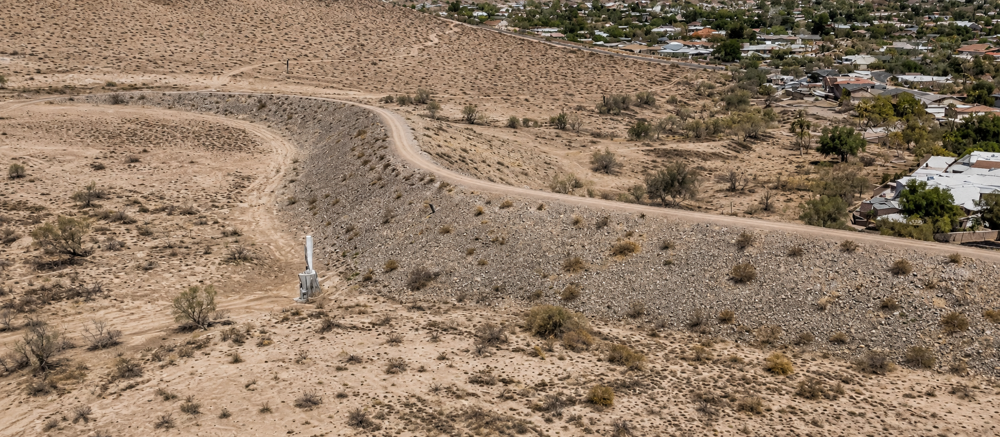
Source: Google Earth Pro imagery. Image enhanced for clarity; dam/basin features unchanged.
A conceptual dam failure scenario was developed for an urban watershed located in the Phoenix metropolitan area in Arizona, United States. The purpose of the study was to evaluate the potential downstream impacts associated with the failure of a flood control structure located within a developed urban environment. The analysis was performed using the prescribed breach method in the FLO-2D model to simulate the release of stored water following a structural failure of the dam.
Urban flood control dams in the Phoenix region are commonly designed to manage storm runoff generated by intense rainfall events. These structures play a critical role in reducing downstream flood risk. However, failure of such structures, whether due to overtopping, structural instability, or operational malfunction, can result in rapid downstream flooding with potentially significant consequences.
The scenario analyzed in this case study represents a hypothetical failure of an urban detention dam.
Modeling Objectives
The primary objective of this case study was to simulate the failure of an urban flood control dam using a physically defined breach and to evaluate the resulting downstream flooding behavior within a developed area.
The analysis focused on:
Simulating the structural failure of the dam
Evaluating downstream flood propagation
Calibrate to flood extent mapping
Identifying potential infrastructure impacts
Assessing flood routing across transportation corridors
This type of modeling is commonly performed for dam safety evaluations, urban flood risk studies, and regulatory compliance assessments.
Model Setup and Data
The dam structure was represented as a levee dam within the computational domain. The failure was simulated using a prescribed breach, in which the location, geometry, and direction of the breach were defined explicitly within the model. The breach was positioned at a location along the dam crest to simulate a structural failure mechanism.
{kind=link}
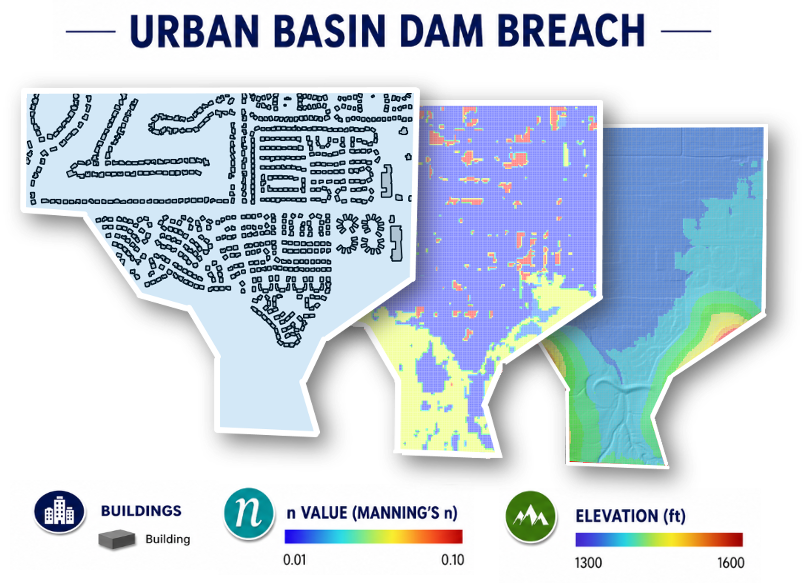
The model dynamically calculated the discharge through the breach as water levels within the reservoir exceeded the structural capacity of the dam. This approach allowed the simulation to represent the progressive release of stored water and the resulting downstream flood routing.
By combining breach dynamics with hydraulic infrastructure representation, the model provided a realistic simulation of both normal and failure conditions for the dam.
Simulation Results
The simulation demonstrated the rapid downstream propagation of floodwaters following the structural failure of the dam. The model predicted that released water would initially follow the primary drainage pathway downstream of the structure before spreading laterally across the urban terrain.
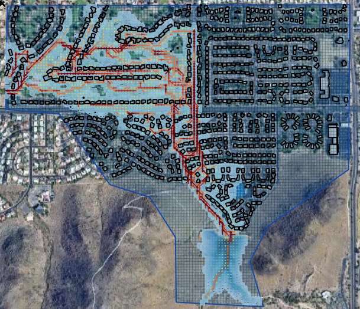
One of the key findings of the analysis was the potential for floodwaters to intersect major transportation infrastructure. The results indicated that flow could cross a nearby highway corridor and continue toward lower-elevation areas located to the southwest of the dam.
The model outputs provided detailed spatial information describing:
Maximum flood depth distribution
Flow velocity patterns
Timing of flood arrival
Potential inundation extent
Downstream hazard zones
These results are critical for evaluating evacuation requirements, infrastructure vulnerability, and emergency response planning. Time dependent results allow emergency planners to establish more precise and accurate safety zones.
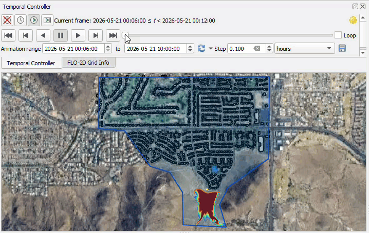
Training and Professional Development
This conceptual urban dam failure scenario is a case study part of the FLO-2D dam breach modeling training program and is designed to illustrate how prescribed breach modeling can be applied to urban flood control systems. The case study provides a practical example of how numerical modeling can support decision-making in emergency planning and infrastructure risk management.
Participants learn how to:
Define realistic breach scenarios
Set up urban infrastructure within the model
Evaluate downstream flood impacts
Interpret model results for risk assessment
The workflow presented in this case study reflects standard engineering practice for dam safety and urban flood risk analysis using physically based hydraulic modeling tools.
Method 3: Erosion Breach
The Erosion Breach method represents the most physically based approach for simulating dam failure in FLO-2D. In this method, the breach develops dynamically as a result of hydraulic erosion driven by the flow of water through the dam structure. Instead of prescribing the final breach geometry or estimating a hydrograph in advance, the model computes the progressive enlargement of the breach based on erosion processes and hydraulic conditions during the simulation.
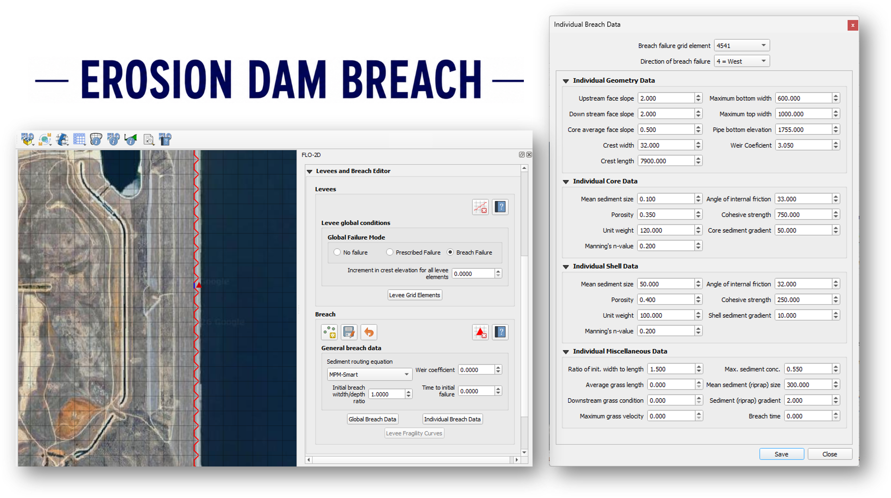
This approach is particularly useful when the failure mechanism is expected to involve overtopping or internal erosion and when the objective of the study is to represent the time-dependent evolution of the breach. The erosion breach method accounts for the interaction between reservoir hydraulics, flow velocity, and material resistance, allowing the breach dimensions to change continuously as the simulation progresses. As the breach widens and deepens, the model automatically updates the discharge and reservoir drawdown, producing a hydrograph that reflects the physical development of the failure.
The erosion process is controlled by parameters that describe the resistance of the dam material to erosion, such as erodibility coefficients and critical shear stress. These parameters can be estimated from laboratory testing, published ranges for similar materials, or regulatory guidance. Because the breach geometry is not predefined, the resulting failure behavior is influenced by both the hydraulic conditions and the assumed material properties, making this method well suited for sensitivity analyses and detailed engineering evaluations of potential failure scenarios.
The erosion breach method is commonly applied in dam safety studies, risk assessments, and design evaluations where the failure mechanism must be represented explicitly and where the timing and magnitude of the breach discharge are important for downstream hazard analysis. It is also valuable when evaluating the influence of material properties or reservoir conditions on the progression of the failure and the resulting floodwave characteristics.
The case study for this method is the Erosion of Diamond Valley Lake, which defined the dam material properties, configured the erosion parameters, and simulated the progressive development of the breach and resulting flood routing using the Erosion Breach method.
Erosion of Diamond Valley Lake
A conceptual dam failure scenario was developed for Diamond Valley Lake, a major reservoir located in Riverside County, California. The objective of the study was to evaluate the potential downstream impacts associated with a progressive erosion failure of the embankment dam using a physically based breach modeling approach in the FLO-2D model.
{kind=link}
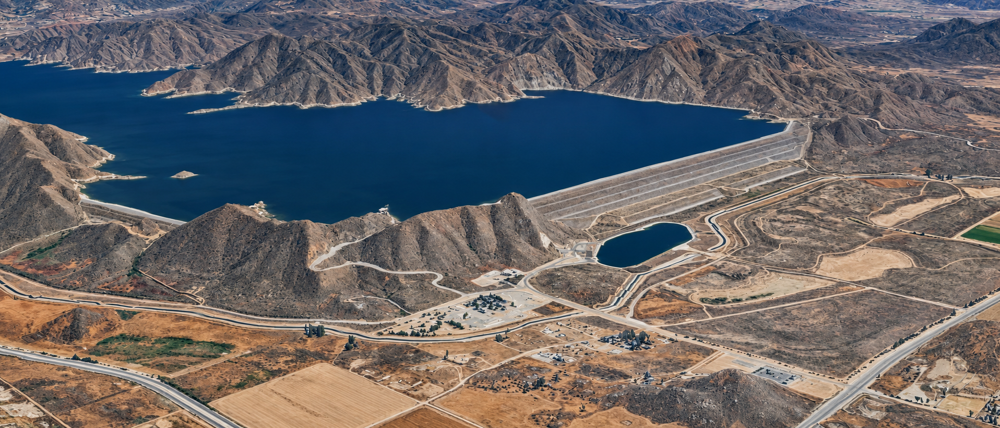
Source: Google Earth Pro imagery. Image enhanced for clarity; dam/basin features unchanged.
Diamond Valley Lake is a large water supply reservoir designed to provide regional water storage and reliability for Southern California. The dam system consists of engineered embankment structures constructed using zoned materials, including a central core and outer shell layers. Because of the size of the reservoir and the stored water volume, any failure of the embankment has the potential to generate significant downstream flooding and infrastructure impacts.
The scenario analyzed in this case study represents a hypothetical erosion-driven breach initiated by internal instability or surface erosion processes. The modeling effort was conducted to support dam safety evaluation and emergency planning by simulating the progressive development of the breach and the resulting flood propagation downstream.
This type of analysis is commonly performed for large reservoirs where the failure mechanism is expected to evolve over time rather than occur instantaneously.
The modeling framework and dam parameters used in this study are based on representative geometry and material properties defined in the project dataset.
Dam Characteristics and Material Properties
The dam structure analyzed in this case study represents a large embankment dam constructed using zoned materials typical of modern reservoir design. The geometry of the dam plays a critical role in controlling breach development and discharge magnitude during a failure event.
Representative structural characteristics for the dam include:
Crest width of approximately 32 feet
Crest length of approximately 7,900 feet
Upstream and downstream shell slopes of approximately 2H:1V
Core slope of approximately 0.5H:1V
These geometric parameters influence both the hydraulic head available for erosion and the stability of the embankment during breach formation.
Material properties are equally important in determining the rate at which the breach develops. In erosion-based failure modeling, parameters such as grain size distribution, porosity, cohesion, and internal friction control the resistance of the embankment to hydraulic erosion.
Typical material properties considered in the analysis include:
Median grain size of the core and shell materials
Porosity and unit weight of the embankment zones
Cohesive strength and friction angle of the materials
Roughness characteristics of the downstream face
These parameters define the mechanical response of the dam during erosion and directly affect the timing and magnitude of the breach discharge.
Modeling Objectives
The primary objective of this case study was to simulate a progressive erosion failure of the dam and evaluate the resulting downstream flood behavior using a physically based breach development model.
The analysis focused on:
Simulating the initiation of erosion within the embankment
Modeling progressive enlargement of the breach opening
Estimating discharge as the reservoir drains
Evaluating downstream flood propagation
Supporting dam safety and emergency planning
This type of modeling is particularly important for large reservoirs where failure mechanisms are controlled by erosion processes rather than instantaneous structural collapse.
Modeling Approach
The dam failure was simulated using the FLO-2D erosion breach method, in which the breach develops dynamically in response to hydraulic forces acting on the embankment materials. Unlike simplified hydrograph-based approaches, the model computes the breach discharge internally as erosion progresses and the breach geometry evolves.
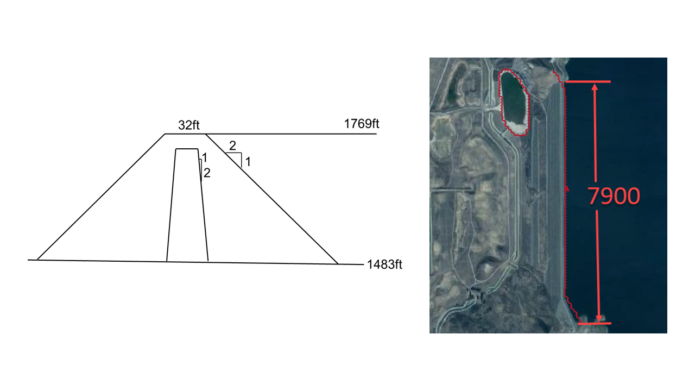
The simulation begins with the reservoir filled to the defined water surface elevation. Once the breach initiates, flow accelerates through the embankment opening and progressively enlarges the breach as material is removed by hydraulic erosion.
Key parameters controlling breach development in this analysis include:
Maximum allowable breach width
Initial breach elevation
Weir discharge coefficient
Breach width-to-depth ratio
Material resistance to erosion
These parameters govern how quickly the breach forms and how rapidly the reservoir drains following failure.
The erosion-based approach provides a physically realistic representation of dam failure behavior and is particularly appropriate for large embankment dams where internal erosion or overtopping is the dominant failure mechanism.
Simulation Results
The simulation demonstrated the progressive formation of a breach in the embankment and the resulting release of reservoir water over time. The model predicted an initial period of relatively low discharge followed by rapid acceleration of flow as the breach widened and deepened.
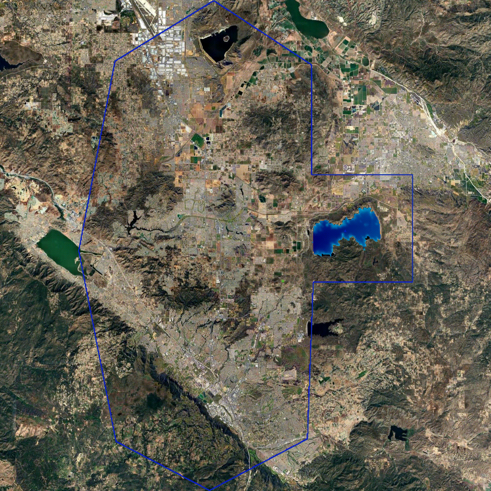
As the breach developed, the reservoir water level declined steadily, producing a sustained release of flow downstream. The results showed that the peak discharge occurred after the breach reached a critical size, at which point the hydraulic head driving the flow was maximized.
Downstream flooding patterns reflected the gradual increase in discharge associated with erosion-driven failure. Areas closest to the dam experienced the highest flow velocities and water depths, while downstream areas exhibited broader floodplain inundation as flow energy dissipated.
The simulation also confirmed that the total released volume matched the reservoir storage, indicating that the model maintained appropriate mass conservation throughout the event. This verification step is essential for ensuring the reliability of dam breach simulations used in engineering and regulatory applications.
Training and Professional Development
This case study is part of the FLO-2D dam breach modeling training program and is designed to illustrate how erosion-based breach modeling can be applied to large reservoir systems. The scenario provides a practical example of how numerical modeling can support decision-making in dam safety and risk management.
Participants learn how to:
Define embankment geometry and material properties
Configure erosion-based breach parameters
Simulate progressive breach development
Evaluate downstream flood impacts
Interpret model results for emergency planning
The workflow presented in this case study reflects standard engineering practice for physically based dam breach analysis in large reservoir systems.